Fleet Shield — UI audit, before and after
Apple-inspired refinement of the Sant Kabir Eye Hospital wallboard. The before captures use commit
3d8c97c; the after captures use the current working tree at 1434 × 1336 in demo mode.
Type system11–22px ramp, tabular numerals, one UI face
SurfacesOne card, control and panel radius; one shadow scale
HierarchySummary popover instead of a full fleet roster
AccessibilityLighthouse 1.0 / 1.0 / 1.0
1 · Fleet overview
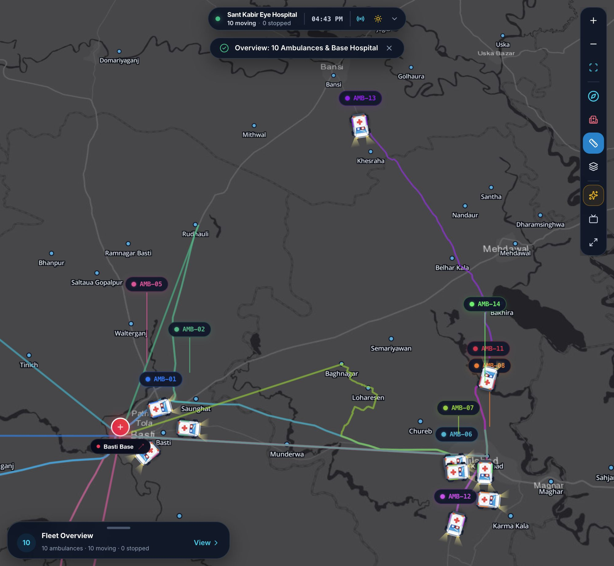
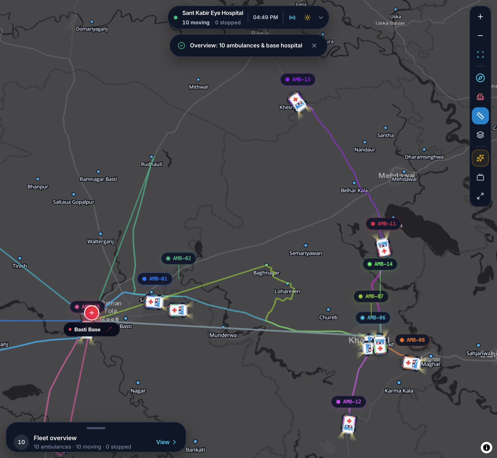
2 · Expanded fleet summary
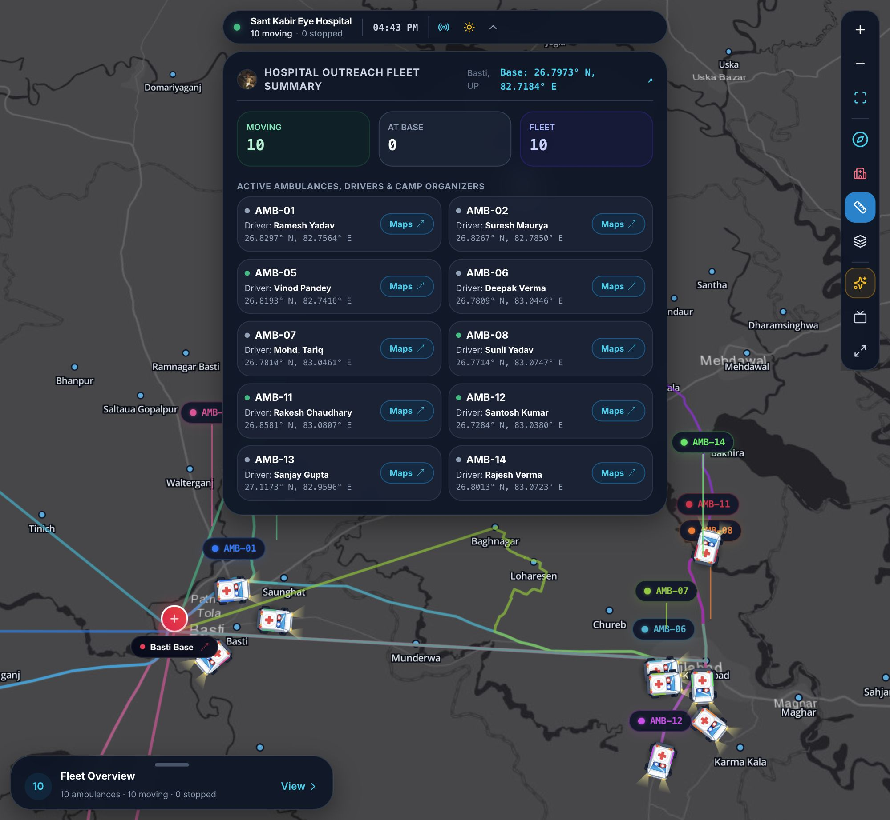
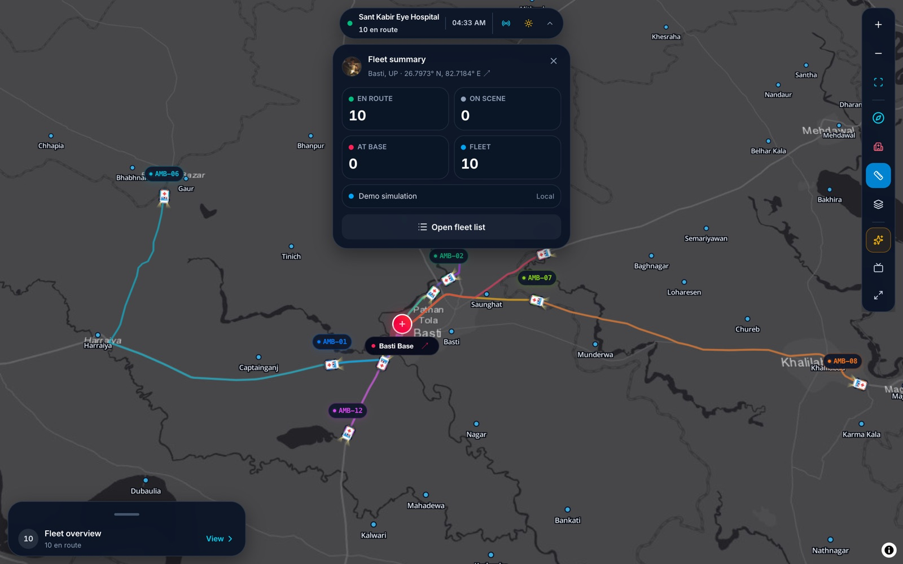
3 · Fleet list
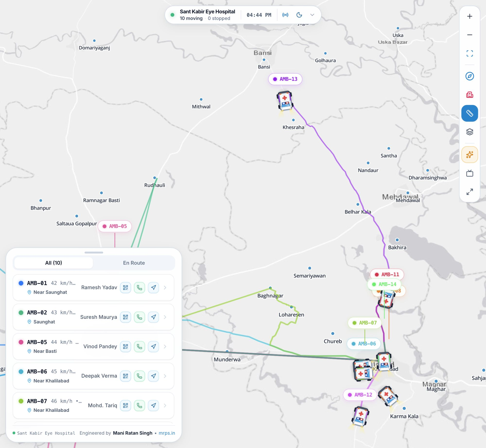
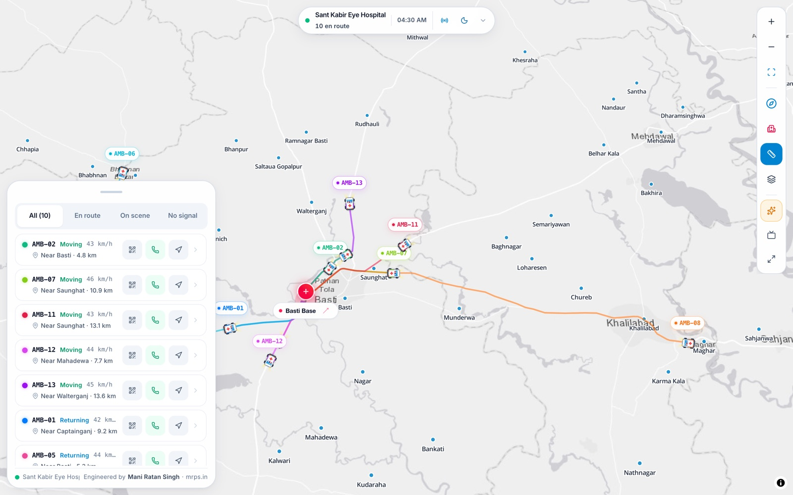
3b · Operational states, sorting and filters
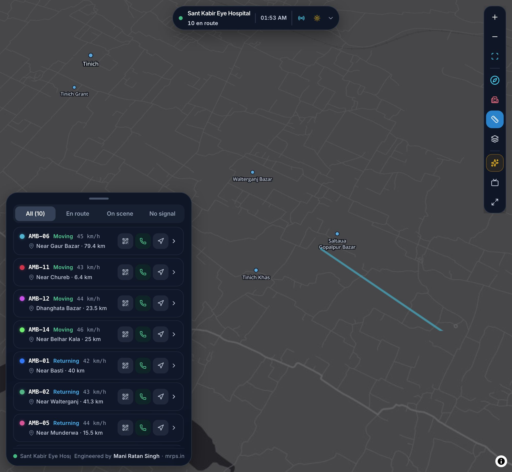
4 · Vehicle detail
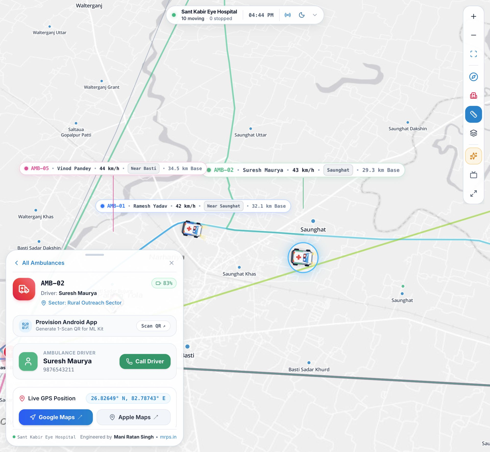
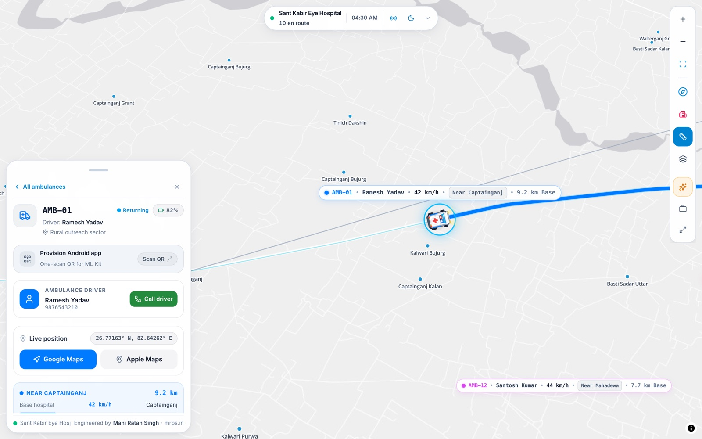
5 · Provisioning dialog
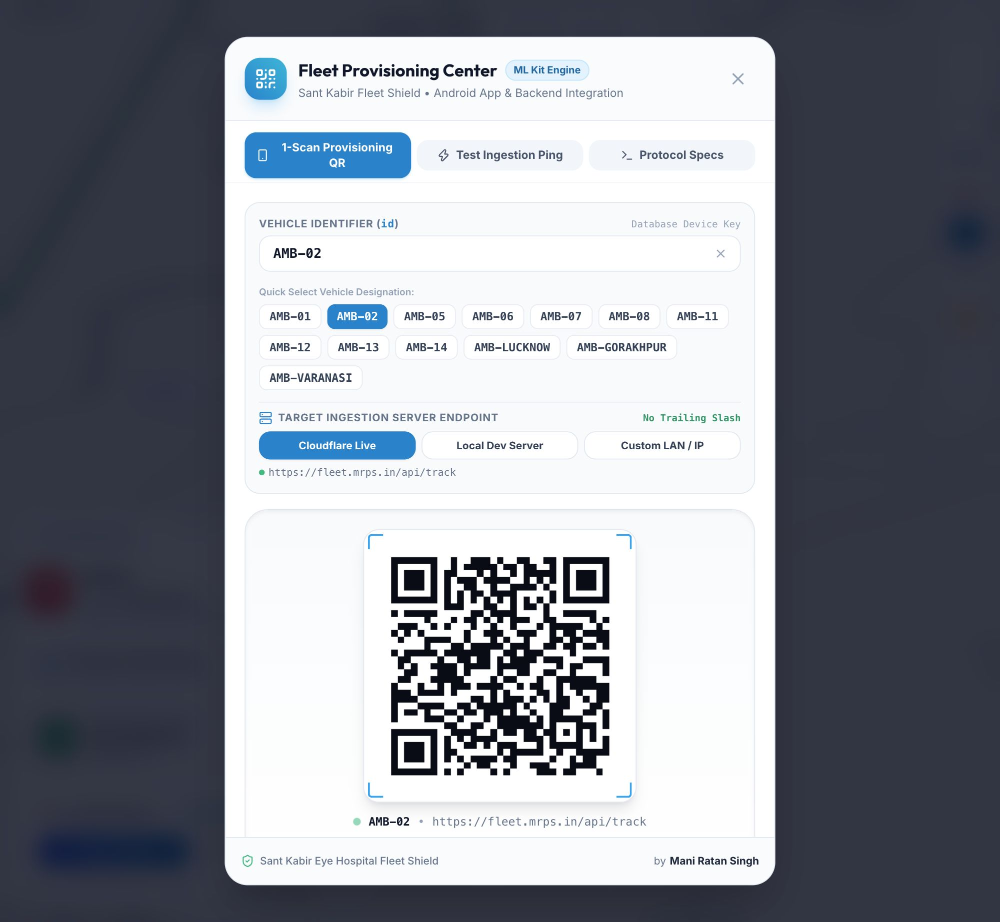
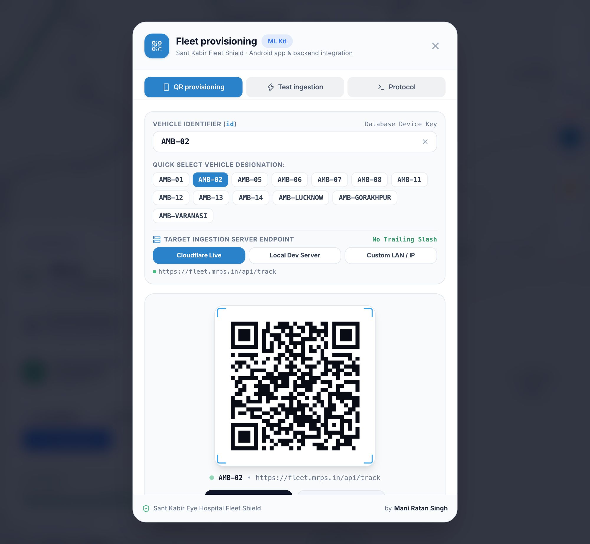
6 · Base-anchored routes
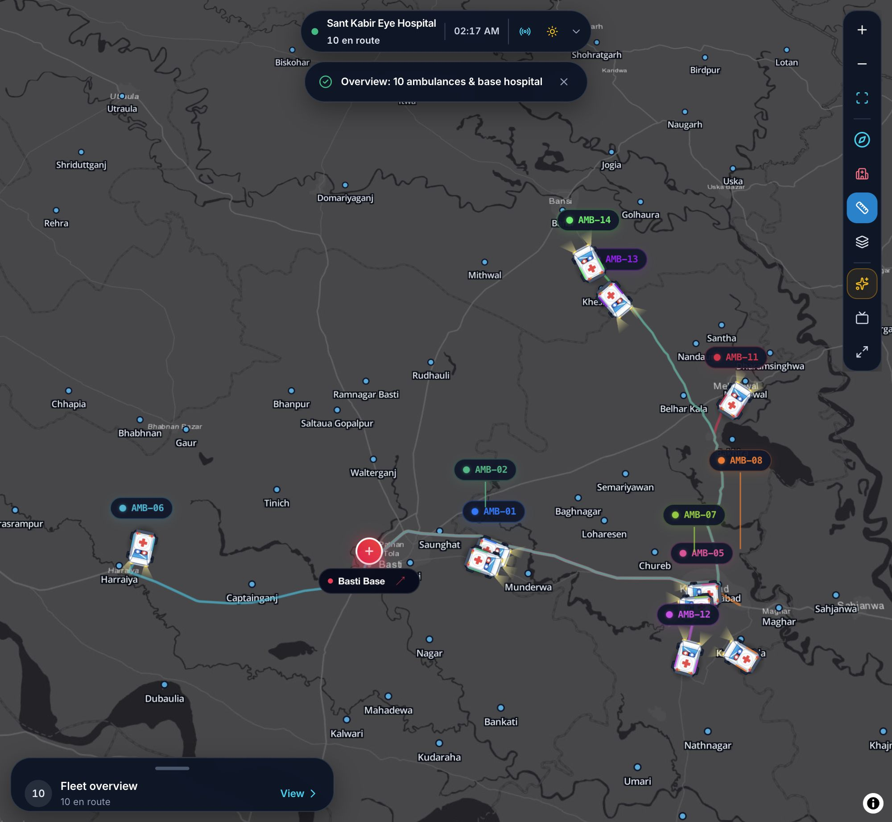